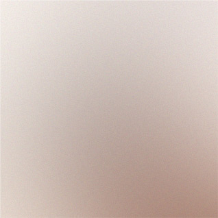

Tentang IT Fest Paramadina
IT Fest Paramadina merupakan festival teknologi dan kompetisi mahasiswa Universitas Paramadina yang menjadi wadah untuk mengembangkan kreativitas, inovasi, dan kemampuan di bidang teknologi informasi.
Festival Teknologi dan Kompetisi Mahasiswa Universitas Paramadina.
Template by HTML5 UP.
IT Fest Paramadina merupakan festival teknologi dan kompetisi mahasiswa Universitas Paramadina yang menjadi wadah untuk mengembangkan kreativitas, inovasi, dan kemampuan di bidang teknologi informasi.

Kembangkan ide kreatif dan tunjukkan kemampuanmu melalui karya digital yang menarik.
Tuangkan gagasan menjadi solusi inovatif dengan memanfaatkan teknologi informasi.
Bertukar ide, menambah pengalaman, dan membangun koneksi bersama mahasiswa lainnya.
Pilih cabang kompetisi sesuai minat dan kemampuanmu. Tunjukkan kreativitas, inovasi, dan kemampuan teknologi bersama mahasiswa lainnya di IT Fest Paramadina.
IT Fest Paramadina menghadirkan berbagai cabang kompetisi di bidang teknologi informasi. Setiap peserta dapat mengembangkan ide kreatif, menunjukkan kemampuan, dan berinovasi melalui kompetisi yang tersedia.
Ikuti IT Fest Paramadina dan tunjukkan kemampuan terbaikmu. Informasi jadwal, persyaratan, dan tata cara pendaftaran akan diumumkan melalui kanal resmi penyelenggara.